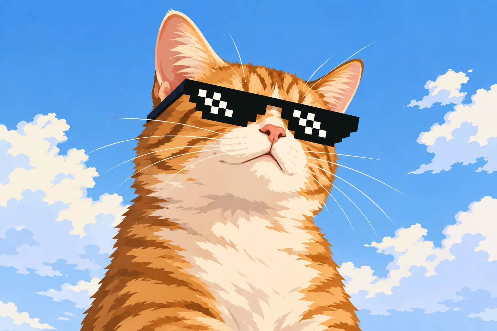
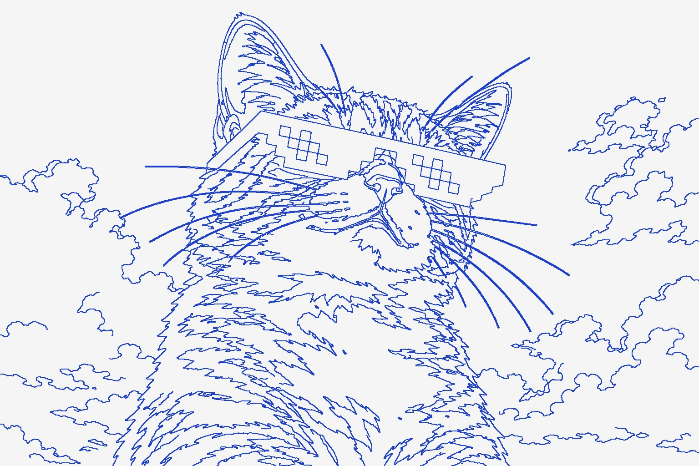
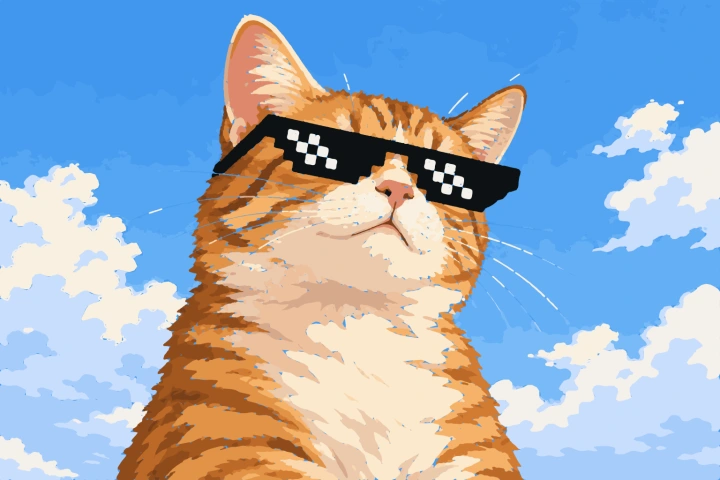

Every squiggle is a function.
An image goes in. Chawk traces the ink, splits it into strokes, and fits lines, arcs, waves, and splines. The drawing comes back as a plot.
$ docker run --rm -p 8010:8000 \
ghcr.io/hello2himel/chawk:latest
↑ the cat is just algebra. even the shades too!
Five images. Rebuilt from equations.
Each proof is the rebuilt render. Open one to compare the source with the equations-only reconstruction.
← click a proof to drag the compare handle
From ink to equations.
Chawk reads the drawing with a deterministic computer-vision pipeline, then fits primitives to the ink.

The image goes in.
A flat-shaded illustration or a photo of line art. The tracer finds the ink itself.

The ink becomes strokes.
An adaptive mask isolates ink from paper. Contours are split at corners, resampled, and fitted: line, circle, ellipse, sinusoid, spline. The cat gets 1,672 equations.

The proof comes out.
Every layer is rendered from the fitted functions. The equations are the artifact.
the model is just a very patient curve fit.
How it works: an ink mask, contour extraction, corner splitting, resampling, primitive fitting, model selection, then a Matplotlib render. Every step is deterministic.
The cat is algebra.
The pixel-shades cat is 1,672 equations. Every region boundary is a fitted function, rendered from its coefficients.
Your machine. Your doodle.
The showcase is precomputed. The tracer runs locally in one Docker container, on your machine.
$ docker run --rm -p 8010:8000 \ ghcr.io/hello2himel/chawk:latest